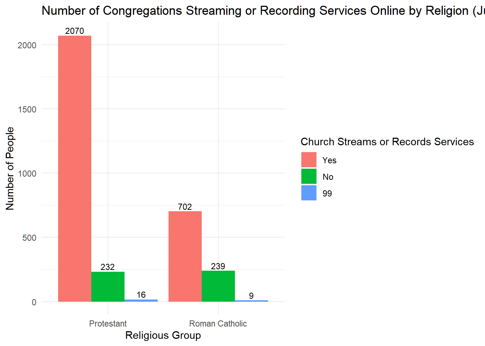

# A tibble: 2 × 4
ATTENDMONTH_W70 mean_month sd_month n
<dbl+lbl> <dbl> <dbl> <int>
1 1 [Yes, attended religious services in person in th… 1 0 1151
2 2 [No, did not attend religious services in person … 2 0 5002
# A tibble: 2 × 4
ATTENDONLINE_W70 mean_month sd_month n
<dbl+lbl> <dbl> <dbl> <int>
1 1 [Yes, have watched religious services online or o… 1 0 3257
2 2 [No, have not watched religious services online o… 2 0 2896
# COVIDCONG2_W70 # Regardless of whether it is now open to the public, is the house of worship you attend most often CURRENTLY streaming or recording its services so that people can watch them online or on TV?ggplot(w70_cp %>%filter(!is.na(COVIDCONG2_W70)), aes(x =factor(F_RELIG), fill =factor(COVIDCONG2_W70))) +geom_bar(position ="dodge") +geom_text(stat ="count",aes(label =after_stat(count)), position =position_dodge(width =0.9),vjust =-0.3,size =3 ) +labs(title ="Number of Congregations Streaming or Recording Services Online by Religion (July 2020)",x ="Religious Group",y ="Number of People",fill ="Church Streams or Records Services" ) +scale_x_discrete(labels =c("1"="Protestant", "2"="Roman Catholic")) +scale_fill_discrete(labels =c("1"="Yes", "2"="No")) +theme_minimal()

# analysismodel_1b <-glm(ATTENDMONTH_bin ~factor(COVIDCONG2_W70), data = w70_cp_attend, family = binomial, weights = WEIGHT_W70)
Warning in eval(family$initialize): non-integer #successes in a binomial glm!
summary(model_1b)
Call:
glm(formula = ATTENDMONTH_bin ~ factor(COVIDCONG2_W70), family = binomial,
data = w70_cp_attend, weights = WEIGHT_W70)
Coefficients:
Estimate Std. Error z value Pr(>|z|)
(Intercept) -0.51993 0.04322 -12.030 <2e-16 ***
factor(COVIDCONG2_W70)2 -0.19514 0.10527 -1.854 0.0638 .
factor(COVIDCONG2_W70)99 0.67180 0.45377 1.480 0.1387
---
Signif. codes: 0 '***' 0.001 '**' 0.01 '*' 0.05 '.' 0.1 ' ' 1
(Dispersion parameter for binomial family taken to be 1)
Null deviance: 3680.3 on 3267 degrees of freedom
Residual deviance: 3674.4 on 3265 degrees of freedom
(2885 observations deleted due to missingness)
AIC: 3461.3
Number of Fisher Scoring iterations: 4
model_1 <-glm(ATTENDMONTH_bin ~factor(COVIDCONG2_W70), data = w70_cp_attend, family = binomial)summary(model_1)
Call:
glm(formula = ATTENDMONTH_bin ~ factor(COVIDCONG2_W70), family = binomial,
data = w70_cp_attend)
Coefficients:
Estimate Std. Error z value Pr(>|z|)
(Intercept) -0.62253 0.03984 -15.625 <2e-16 ***
factor(COVIDCONG2_W70)2 0.09696 0.10334 0.938 0.348
factor(COVIDCONG2_W70)99 -0.13124 0.43059 -0.305 0.761
---
Signif. codes: 0 '***' 0.001 '**' 0.01 '*' 0.05 '.' 0.1 ' ' 1
(Dispersion parameter for binomial family taken to be 1)
Null deviance: 4240.6 on 3267 degrees of freedom
Residual deviance: 4239.6 on 3265 degrees of freedom
(2885 observations deleted due to missingness)
AIC: 4245.6
Number of Fisher Scoring iterations: 4
# COVIDCONG3_W70. # Which of the following best describes the current operating status of the house of worship you attend most often?ggplot(w70_cp%>%filter(!is.na(COVIDCONG3_W70)), aes(x =factor(F_RELIG), fill =factor(COVIDCONG3_W70))) +geom_bar(position ="dodge") +geom_text(stat ="count",aes(label =after_stat(count)), position =position_dodge(width =0.9),vjust =-0.3,size =3 ) +labs(title ="Operating Status of Congregations by Religion (July 2020)",x ="Religious Group",y ="Number of Respondents",fill ="Operating Status of House of Worship" ) +scale_x_discrete(labels =c("1"="Protestant","2"="Roman Catholic" )) +scale_fill_discrete(labels =c("1"="Open as before COVID-19","2"="Open with modifications","3"="Not open for in-person services","4"="Not sure","99"="Refused" )) +theme_minimal()
Call:
glm(formula = ATTENDMONTH_bin ~ factor(COVIDCONG3_W70), family = binomial,
data = w70_cp_attend)
Coefficients:
Estimate Std. Error z value Pr(>|z|)
(Intercept) 0.6147 0.1705 3.605 0.000312 ***
factor(COVIDCONG3_W70)2 -0.6294 0.1766 -3.565 0.000364 ***
factor(COVIDCONG3_W70)3 -2.9469 0.2022 -14.577 < 2e-16 ***
factor(COVIDCONG3_W70)4 -2.6400 0.2977 -8.867 < 2e-16 ***
factor(COVIDCONG3_W70)99 -14.1807 202.3665 -0.070 0.944134
---
Signif. codes: 0 '***' 0.001 '**' 0.01 '*' 0.05 '.' 0.1 ' ' 1
(Dispersion parameter for binomial family taken to be 1)
Null deviance: 4240.6 on 3267 degrees of freedom
Residual deviance: 3569.9 on 3263 degrees of freedom
(2885 observations deleted due to missingness)
AIC: 3579.9
Number of Fisher Scoring iterations: 12
# CONGRESTRICT1_a_W70. # Which of the following, if any, is the house of worship you attend most often CURRENTLY doing as a result of the coronavirus outbreak? Requiring people to stay at least 6 feet away from each otherggplot(w70_cp%>%filter(!is.na(CONGRESTRICT1_a_W70)), aes(x =factor(F_RELIG), fill =factor(CONGRESTRICT1_a_W70))) +geom_bar(position ="dodge") +geom_text(stat ="count",aes(label =after_stat(count)), position =position_dodge(width =0.9),vjust =-0.3,size =3 ) +labs(title ="Social Distancing Rules in Congregations by Religion (July 2020)",x ="Religious Group",y ="Number of Respondents",fill ="Require 6-Foot Social Distancing" ) +scale_x_discrete(labels =c("1"="Protestant","2"="Roman Catholic" )) +scale_fill_discrete(labels =c("1"="Yes, my congregation is doing this","2"="No, my congregation is not doing this","3"="Not sure","99"="Refused" )) +theme_minimal()
Call:
glm(formula = ATTENDMONTH_bin ~ factor(CONGRESTRICT1_a_W70),
family = binomial, data = w70_cp_attend)
Coefficients:
Estimate Std. Error z value Pr(>|z|)
(Intercept) 0.01229 0.04957 0.248 0.804
factor(CONGRESTRICT1_a_W70)2 0.83168 0.18898 4.401 1.08e-05 ***
factor(CONGRESTRICT1_a_W70)3 -1.68297 0.25493 -6.602 4.07e-11 ***
factor(CONGRESTRICT1_a_W70)99 0.39318 0.91422 0.430 0.667
---
Signif. codes: 0 '***' 0.001 '**' 0.01 '*' 0.05 '.' 0.1 ' ' 1
(Dispersion parameter for binomial family taken to be 1)
Null deviance: 2628.3 on 1895 degrees of freedom
Residual deviance: 2543.3 on 1892 degrees of freedom
(4257 observations deleted due to missingness)
AIC: 2551.3
Number of Fisher Scoring iterations: 4
# CONGRESTRICT1_b_W70. # Which of the following, if any, is the house of worship you attend most often CURRENTLY doing as a result of the coronavirus outbreak? Requiring people to wear masksggplot(w70_cp%>%filter(!is.na(CONGRESTRICT1_b_W70)), aes(x =factor(F_RELIG), fill =factor(CONGRESTRICT1_b_W70))) +geom_bar(position ="dodge") +geom_text(stat ="count",aes(label =after_stat(count)), position =position_dodge(width =0.9),vjust =-0.3,size =3 ) +labs(title ="Mask Requirements in Congregations by Religion (July 2020)",x ="Religious Group",y ="Number of Respondents",fill ="Require Masks During Services" ) +scale_x_discrete(labels =c("1"="Protestant","2"="Roman Catholic" )) +scale_fill_discrete(labels =c("1"="Yes, my congregation is doing this","2"="No, my congregation is not doing this","3"="Not sure","99"="Refused" )) +theme_minimal()
Call:
glm(formula = ATTENDMONTH_bin ~ factor(CONGRESTRICT1_b_W70),
family = binomial, data = w70_cp_attend)
Coefficients:
Estimate Std. Error z value Pr(>|z|)
(Intercept) -0.14854 0.05632 -2.637 0.00836 **
factor(CONGRESTRICT1_b_W70)2 1.02092 0.11694 8.730 < 2e-16 ***
factor(CONGRESTRICT1_b_W70)3 -1.40961 0.21542 -6.544 6.01e-11 ***
factor(CONGRESTRICT1_b_W70)99 -0.54461 0.70935 -0.768 0.44263
---
Signif. codes: 0 '***' 0.001 '**' 0.01 '*' 0.05 '.' 0.1 ' ' 1
(Dispersion parameter for binomial family taken to be 1)
Null deviance: 2628.3 on 1895 degrees of freedom
Residual deviance: 2466.5 on 1892 degrees of freedom
(4257 observations deleted due to missingness)
AIC: 2474.5
Number of Fisher Scoring iterations: 4
# CONGRESTRICT1_c_W70. # Which of the following, if any, is the house of worship you attend most often CURRENTLY doing as a result of the coronavirus outbreak? Restricting the number of people who can attend at any one timeggplot(w70_cp%>%filter(!is.na(CONGRESTRICT1_c_W70)), aes(x =factor(F_RELIG), fill =factor(CONGRESTRICT1_c_W70))) +geom_bar(position ="dodge") +geom_text(stat ="count",aes(label =after_stat(count)), position =position_dodge(width =0.9),vjust =-0.3,size =3 ) +labs(title ="Restrictions on Number of Attendees by Religion (July 2020)",x ="Religious Group",y ="Number of Respondents",fill ="Restrict Attendance Numbers" ) +scale_x_discrete(labels =c("1"="Protestant","2"="Roman Catholic" )) +scale_fill_discrete(labels =c("1"="Yes, my congregation is doing this","2"="No, my congregation is not doing this","3"="Not sure" )) +theme_minimal()
Call:
glm(formula = ATTENDMONTH_bin ~ factor(CONGRESTRICT1_c_W70),
family = binomial, data = w70_cp_attend)
Coefficients:
Estimate Std. Error z value Pr(>|z|)
(Intercept) -0.10008 0.05512 -1.816 0.0694 .
factor(CONGRESTRICT1_c_W70)2 0.81272 0.12154 6.687 2.28e-11 ***
factor(CONGRESTRICT1_c_W70)3 -0.84329 0.17401 -4.846 1.26e-06 ***
factor(CONGRESTRICT1_c_W70)99 0.10008 0.70925 0.141 0.8878
---
Signif. codes: 0 '***' 0.001 '**' 0.01 '*' 0.05 '.' 0.1 ' ' 1
(Dispersion parameter for binomial family taken to be 1)
Null deviance: 2628.3 on 1895 degrees of freedom
Residual deviance: 2542.7 on 1892 degrees of freedom
(4257 observations deleted due to missingness)
AIC: 2550.7
Number of Fisher Scoring iterations: 4
# F_ACSWEB# Household internet statusggplot( w70_cp %>%filter(!is.na(F_ACSWEB)),aes(x =factor(F_RELIG), fill =factor(F_ACSWEB))) +geom_bar(position ="dodge") +geom_text(stat ="count",aes(label =after_stat(count)),position =position_dodge(width =0.9),vjust =-0.3,size =3 ) +labs(title ="Household Internet Access by Religion (July 2020)",x ="Religious Group",y ="Number of Respondents",fill ="Internet Access Type" ) +scale_x_discrete(labels =c("1"="Protestant","2"="Roman Catholic" )) +scale_fill_discrete(labels =c("1"="Accesses Internet by paying a provider","2"="Does not access Internet by paying a provider" )) +theme_minimal()
Call:
glm(formula = ATTENDMONTH_bin ~ factor(F_ACSWEB), family = binomial,
data = w70_cp_attend)
Coefficients:
Estimate Std. Error z value Pr(>|z|)
(Intercept) -1.47770 0.03366 -43.901 <2e-16 ***
factor(F_ACSWEB)2 0.15694 0.14157 1.109 0.268
---
Signif. codes: 0 '***' 0.001 '**' 0.01 '*' 0.05 '.' 0.1 ' ' 1
(Dispersion parameter for binomial family taken to be 1)
Null deviance: 5930.7 on 6152 degrees of freedom
Residual deviance: 5929.5 on 6151 degrees of freedom
AIC: 5933.5
Number of Fisher Scoring iterations: 4
# SNSUSE_W70. # Do you ever use social media sites like Facebook, Twitter or Instagram?ggplot( w70_cp %>%filter(SNSUSE_W70 %in%c(1, 2)), # 去掉 Refused (99) 和 NAaes(x =factor(F_RELIG), fill =factor(SNSUSE_W70))) +geom_bar(position ="dodge") +geom_text(stat ="count",aes(label =after_stat(count)),position =position_dodge(width =0.9),vjust =-0.3,size =3 ) +labs(title ="Social Media Usage by Religion (July 2020)",x ="Religious Group",y ="Number of Respondents",fill ="Use of Social Media Sites" ) +scale_x_discrete(labels =c("1"="Protestant","2"="Roman Catholic" )) +scale_fill_discrete(labels =c("1"="Yes, I use social media sites","2"="No, I do not use social media sites" )) +theme_minimal()
Warning in multinom(formula_h1, data = w70_cp_clean): group 'Neither' is empty
# weights: 66 (42 variable)
initial value 1789.639418
iter 10 value 1423.418449
iter 20 value 1342.390197
iter 30 value 1334.129807
iter 40 value 1333.722167
iter 50 value 1333.705863
final value 1333.705846
converged
# Step 7: 输出 summary 与显著性summary(model_h1)
Call:
multinom(formula = formula_h1, data = w70_cp_clean)
Coefficients:
(Intercept) ATTENDCONF_W702 ATTENDCONF_W703 ATTENDCONF_W704
Online only -0.7199058 0.6715364 2.17852703 3.455312
Both 1.3796340 -0.3211065 0.02906243 1.046654
COVIDCONG3_W702 COVIDCONG3_W703 COVIDCONG3_W704
Online only 1.0628470 2.9654929 0.7155992
Both 0.2844887 0.1414456 -1.3295144
CONGRESTRICT2_a_W702 CONGRESTRICT2_b_W702 CONGRESTRICT2_c_W702
Online only -0.08536717 -0.3353494 -0.6545903
Both 0.21114385 0.3191209 -0.4675444
CTKNOW1_W702 CTKNOW1_W703 CTKNOW1_W704 CONTACTTRAC1_W702
Online only -0.1142149 0.3545167 -0.20555358 0.4277780
Both 0.1563127 0.0882134 0.07929013 0.1623047
CONTACTTRAC1_W703 SERMONISSUE_a_W702 SERMONISSUE_b_W702
Online only 0.7112632 0.3894031 -0.009003079
Both 0.3794154 0.3089964 -0.169780048
SERMONISSUE_c_W702 SERMONISSUE_d_W702 SERMONISSUE_e_W702
Online only -0.5720430 -0.080421877 0.01729502
Both -0.5974311 0.001647749 -0.28322188
SERMONISSUE_f_W702
Online only -0.1315571
Both -0.7423866
Std. Errors:
(Intercept) ATTENDCONF_W702 ATTENDCONF_W703 ATTENDCONF_W704
Online only 0.5678765 0.1781822 0.3436311 1.027228
Both 0.5110312 0.1751887 0.3712603 1.075746
COVIDCONG3_W702 COVIDCONG3_W703 COVIDCONG3_W704
Online only 0.4737798 0.5573023 0.6366466
Both 0.4212390 0.5364591 0.7104233
CONGRESTRICT2_a_W702 CONGRESTRICT2_b_W702 CONGRESTRICT2_c_W702
Online only 0.3155999 0.2322300 0.2070422
Both 0.2862459 0.2176004 0.2005571
CTKNOW1_W702 CTKNOW1_W703 CTKNOW1_W704 CONTACTTRAC1_W702
Online only 0.1965213 0.2873707 0.2850843 0.2110419
Both 0.1953927 0.2917858 0.2817153 0.2060415
CONTACTTRAC1_W703 SERMONISSUE_a_W702 SERMONISSUE_b_W702
Online only 0.3405476 0.2725667 0.2109429
Both 0.3361204 0.2630449 0.2082300
SERMONISSUE_c_W702 SERMONISSUE_d_W702 SERMONISSUE_e_W702
Online only 0.2010535 0.2522052 0.2264868
Both 0.1991021 0.2441884 0.2221476
SERMONISSUE_f_W702
Online only 0.1882797
Both 0.1833581
Residual Deviance: 2667.412
AIC: 2751.412
ℹ Multinomial models, multi-component models and other groups models have a
different underlying structure than the models gtsummary was designed for.
• Functions designed to work with `tbl_regression()` objects may yield
unexpected results.
ℹ Suppress this message with `?suppressMessages()`.
Predictors of Online and Hybrid Attendance (Refused Responses Removed)
Characteristic
OR
95% CI
p-value
Online only
Confidence in attending safely
Very confident
—
—
Somewhat confident
1.94
1.35, 2.79
<0.001
Not too confident
9.31
4.62, 18.8
<0.001
Not at all confident
29.0
3.83, 220
0.001
Congregation’s COVID safety actions
No actions
—
—
Some actions
2.57
0.93, 7.06
0.068
Many actions
16.7
5.14, 54.1
<0.001
Extensive actions
2.33
0.60, 9.04
0.2
Congregational restrictions
No restrictions
—
—
Minor restrictions
0.47
0.33, 0.69
<0.001
Major restrictions
1.00
1.00, 1.00
>0.9
Severe restrictions
1.00
1.00, 1.00
>0.9
Contact tracing support
Do not support
—
—
Support contact tracing
0.65
0.43, 0.98
0.039
Sermon topic: limiting COVID spread
Did not hear such sermons
—
—
Heard sermons on limiting COVID spread
1.76
1.20, 2.59
0.004
Sermon topic: other issues
Did not hear such sermons
—
—
Heard sermons on other topics
1.13
0.78, 1.63
0.5
Both
Confidence in attending safely
Very confident
—
—
Somewhat confident
0.70
0.49, 0.99
0.046
Not too confident
0.89
0.41, 1.91
0.8
Not at all confident
2.82
0.34, 23.3
0.3
Congregation’s COVID safety actions
No actions
—
—
Some actions
1.41
0.56, 3.54
0.5
Many actions
1.33
0.42, 4.17
0.6
Extensive actions
0.30
0.06, 1.42
0.13
Congregational restrictions
No restrictions
—
—
Minor restrictions
0.68
0.48, 0.98
0.039
Major restrictions
1.00
1.00, 1.00
Severe restrictions
1.00
1.00, 1.00
Contact tracing support
Do not support
—
—
Support contact tracing
0.86
0.58, 1.28
0.5
Sermon topic: limiting COVID spread
Did not hear such sermons
—
—
Heard sermons on limiting COVID spread
1.83
1.25, 2.68
0.002
Sermon topic: other issues
Did not hear such sermons
—
—
Heard sermons on other topics
2.16
1.51, 3.10
<0.001
Abbreviations: CI = Confidence Interval, OR = Odds Ratio
Warning in multinom(formula_h2, data = w70_cp_clean): group 'Neither' is empty
# weights: 57 (36 variable)
initial value 1621.551738
iter 10 value 1427.929117
iter 20 value 1360.229742
iter 30 value 1355.334161
iter 40 value 1355.034026
iter 50 value 1354.981978
final value 1354.981899
converged
# Step 7: 输出结果与显著性summary(model_h2)
Call:
multinom(formula = formula_h2, data = w70_cp_clean)
Coefficients:
(Intercept) COVIDTHREAT_a_W702 COVIDTHREAT_a_W703
Online only 2.093307 -0.3045787 -0.4364010
Both 1.915513 -0.1863922 -0.0214079
COVIDTHREAT_b_W702 COVIDTHREAT_b_W703 COVIDTHREAT_c_W702
Online only -0.4500344 -0.1979547 0.04223921
Both -0.2586253 -0.1167738 0.03824178
COVIDTHREAT_c_W703 SERMONISSUE_a_W702 SERMONISSUE_b_W702
Online only 1.1987150 0.4637585 -0.00654076
Both 0.1452293 0.3624229 -0.09050472
SERMONISSUE_c_W702 SERMONISSUE_d_W702 SERMONISSUE_e_W702
Online only -0.5505399 0.0564213 -0.1502468
Both -0.7315853 0.1378831 -0.1697184
SERMONISSUE_f_W702 COVIDLESSON2_W702 COVIDLESSON2_W703
Online only -0.1129122 -0.5239118 10.06398
Both -0.6891540 -0.7392679 11.04211
CONGRESTRICT2_a_W702 CONGRESTRICT2_b_W702 CONGRESTRICT2_c_W702
Online only 0.1398514 -0.4122931 -0.6340664
Both 0.3088788 0.4388556 -0.4277250
Std. Errors:
(Intercept) COVIDTHREAT_a_W702 COVIDTHREAT_a_W703
Online only 0.2764635 0.2051028 0.6113844
Both 0.2818791 0.2139728 0.5923198
COVIDTHREAT_b_W702 COVIDTHREAT_b_W703 COVIDTHREAT_c_W702
Online only 0.2082076 0.3480478 0.2629420
Both 0.2189853 0.3565003 0.2705209
COVIDTHREAT_c_W703 SERMONISSUE_a_W702 SERMONISSUE_b_W702
Online only 1.129650 0.2688844 0.2136333
Both 1.219744 0.2733379 0.2204349
SERMONISSUE_c_W702 SERMONISSUE_d_W702 SERMONISSUE_e_W702
Online only 0.2050070 0.2476612 0.2261368
Both 0.2163484 0.2522863 0.2324565
SERMONISSUE_f_W702 COVIDLESSON2_W702 COVIDLESSON2_W703
Online only 0.1912435 0.1751878 0.4648125
Both 0.1950832 0.1841364 0.4648129
CONGRESTRICT2_a_W702 CONGRESTRICT2_b_W702 CONGRESTRICT2_c_W702
Online only 0.3381173 0.2521209 0.2116469
Both 0.3258516 0.2476644 0.2167460
Residual Deviance: 2709.964
AIC: 2781.964
z <-summary(model_h2)$coefficients /summary(model_h2)$standard.errorsp <- (1-pnorm(abs(z), 0, 1)) *2round(p, 4)
(Intercept) COVIDTHREAT_a_W702 COVIDTHREAT_a_W703
Online only 0 0.1375 0.4754
Both 0 0.3837 0.9712
COVIDTHREAT_b_W702 COVIDTHREAT_b_W703 COVIDTHREAT_c_W702
Online only 0.0307 0.5695 0.8724
Both 0.2376 0.7432 0.8876
COVIDTHREAT_c_W703 SERMONISSUE_a_W702 SERMONISSUE_b_W702
Online only 0.2886 0.0846 0.9756
Both 0.9052 0.1849 0.6814
SERMONISSUE_c_W702 SERMONISSUE_d_W702 SERMONISSUE_e_W702
Online only 0.0072 0.8198 0.5064
Both 0.0007 0.5847 0.4653
SERMONISSUE_f_W702 COVIDLESSON2_W702 COVIDLESSON2_W703
Online only 0.5549 0.0028 0
Both 0.0004 0.0001 0
CONGRESTRICT2_a_W702 CONGRESTRICT2_b_W702 CONGRESTRICT2_c_W702
Online only 0.6792 0.1020 0.0027
Both 0.3432 0.0764 0.0485
Warning in multinom(formula_h3, data = w70_cp_clean): groups 'In-person only'
'Neither' are empty
# weights: 15 (14 variable)
initial value 2103.008546
iter 10 value 1753.901708
iter 20 value 1723.302396
iter 20 value 1723.302394
iter 20 value 1723.302394
final value 1723.302394
converged
Warning in multinom(formula_h4, data = w70_cp_clean): groups 'In-person only'
'Neither' are empty
# weights: 13 (12 variable)
initial value 1669.791558
iter 10 value 1259.733095
iter 20 value 1204.643757
iter 20 value 1204.643750
iter 20 value 1204.643750
final value 1204.643750
converged
# weights: 52 (36 variable)
initial value 2595.143044
iter 10 value 2140.473867
iter 20 value 2027.429196
iter 30 value 2015.085057
iter 40 value 2014.885982
iter 40 value 2014.885965
iter 40 value 2014.885964
final value 2014.885964
converged
# Step 7: 输出结果与显著性summary(model_h5)
Call:
multinom(formula = formula_h5, data = w70_cp_clean)
Coefficients:
(Intercept) CONGDONATE_W702 CONGDONATE_W703 CONGDONATE_W704
Online only 0.7235872 1.24505927 0.57273305 0.9546684
Both 1.5160804 -0.03779188 0.05550558 -0.9972306
Neither -1.4488177 2.06346687 1.13625409 2.2276121
COVIDCONG3_W702 COVIDCONG3_W703 COVIDCONG3_W704 COVIDCONG2_W702
Online only 0.3598276 2.282111 0.7174043 -1.5174958
Both -0.1084876 -0.167790 -0.9743934 -1.3618832
Neither 0.4250494 2.019627 1.8903892 -0.4186463
CONGRESTRICT2_a_W702 CONGRESTRICT2_b_W702 CONGRESTRICT2_c_W702
Online only -0.20008799 -0.5752231 -0.7754465
Both -0.03656094 0.3002452 -0.5264813
Neither -0.41457428 -0.7666672 -1.4403840
F_METRO2
Online only -0.60503260
Both -0.04349124
Neither -0.78507373
Std. Errors:
(Intercept) CONGDONATE_W702 CONGDONATE_W703 CONGDONATE_W704
Online only 0.5107750 0.3292934 0.2795211 0.3880820
Both 0.4785371 0.3215343 0.2586021 0.4338406
Neither 0.7471532 0.5169657 0.4838508 0.5552799
COVIDCONG3_W702 COVIDCONG3_W703 COVIDCONG3_W704 COVIDCONG2_W702
Online only 0.4436675 0.5358951 0.5997098 0.2052347
Both 0.4193056 0.5426694 0.7036596 0.2099120
Neither 0.5922855 0.6758489 0.7084202 0.2332564
CONGRESTRICT2_a_W702 CONGRESTRICT2_b_W702 CONGRESTRICT2_c_W702
Online only 0.3086718 0.2295393 0.2027068
Both 0.2813056 0.2154772 0.1993537
Neither 0.5213776 0.3491894 0.3057118
F_METRO2
Online only 0.2242767
Both 0.2097665
Neither 0.3219012
Residual Deviance: 4029.772
AIC: 4101.772
z <-summary(model_h5)$coefficients /summary(model_h5)$standard.errorsp <- (1-pnorm(abs(z), 0, 1)) *2round(p, 4)
(Intercept) CONGDONATE_W702 CONGDONATE_W703 CONGDONATE_W704
Online only 0.1566 0.0002 0.0405 0.0139
Both 0.0015 0.9064 0.8301 0.0215
Neither 0.0525 0.0001 0.0189 0.0001
COVIDCONG3_W702 COVIDCONG3_W703 COVIDCONG3_W704 COVIDCONG2_W702
Online only 0.4173 0.0000 0.2316 0.0000
Both 0.7958 0.7572 0.1661 0.0000
Neither 0.4730 0.0028 0.0076 0.0727
CONGRESTRICT2_a_W702 CONGRESTRICT2_b_W702 CONGRESTRICT2_c_W702
Online only 0.5168 0.0122 0.0001
Both 0.8966 0.1635 0.0083
Neither 0.4265 0.0281 0.0000
F_METRO2
Online only 0.0070
Both 0.8358
Neither 0.0147
# weights: 48 (33 variable)
initial value 2033.693828
iter 10 value 1621.794509
iter 20 value 1584.688372
iter 30 value 1581.226156
iter 40 value 1580.781092
iter 50 value 1580.769872
iter 50 value 1580.769864
iter 50 value 1580.769864
final value 1580.769864
converged
# Step 7: 输出结果与显著性summary(model_h6)
Call:
multinom(formula = formula_h6, data = w70_cp_clean)
Coefficients:
(Intercept) CONGRESTRICT2_d_W702 CONGRESTRICT1_a_W702
Online only 0.6731116 -0.20501800 -0.65499137
Both 1.2681169 0.03006681 0.15268566
Neither -0.6021969 -0.66831943 -0.06176189
CONGRESTRICT1_a_W703 CONGRESTRICT1_b_W702 CONGRESTRICT1_b_W703
Online only 2.189271 -0.81183480 0.7532681
Both 1.462749 -0.06589429 -0.3600075
Neither 2.872355 -1.21573677 1.1813797
CONGRESTRICT1_c_W702 CONGRESTRICT1_c_W703 ATTENDCONF_W702
Online only -0.6469988 -0.31283589 0.8683659
Both -0.4255992 -0.60308541 -0.2268616
Neither -1.0640645 -0.07565171 0.8686917
ATTENDCONF_W703 ATTENDCONF_W704
Online only 2.7119168 15.03589
Both 0.4035001 11.19150
Neither 2.4773811 15.26691
Std. Errors:
(Intercept) CONGRESTRICT2_d_W702 CONGRESTRICT1_a_W702
Online only 0.1803000 0.1906482 0.3842774
Both 0.1665970 0.1821949 0.3026356
Neither 0.2545739 0.2603080 0.5780700
CONGRESTRICT1_a_W703 CONGRESTRICT1_b_W702 CONGRESTRICT1_b_W703
Online only 1.057851 0.2358375 0.4730123
Both 1.084617 0.2074616 0.5181546
Neither 1.087279 0.3869620 0.5293952
CONGRESTRICT1_c_W702 CONGRESTRICT1_c_W703 ATTENDCONF_W702
Online only 0.2428989 0.3645272 0.1902930
Both 0.2142188 0.3641424 0.1778196
Neither 0.4098697 0.4360311 0.2748932
ATTENDCONF_W703 ATTENDCONF_W704
Online only 0.4197603 0.2926448
Both 0.4369020 0.5010028
Neither 0.4842694 0.3398977
Residual Deviance: 3161.54
AIC: 3227.54
z <-summary(model_h6)$coefficients /summary(model_h6)$standard.errorsp <- (1-pnorm(abs(z), 0, 1)) *2round(p, 4)
(Intercept) CONGRESTRICT2_d_W702 CONGRESTRICT1_a_W702
Online only 0.0002 0.2822 0.0883
Both 0.0000 0.8689 0.6139
Neither 0.0180 0.0102 0.9149
CONGRESTRICT1_a_W703 CONGRESTRICT1_b_W702 CONGRESTRICT1_b_W703
Online only 0.0385 0.0006 0.1113
Both 0.1775 0.7508 0.4872
Neither 0.0082 0.0017 0.0256
CONGRESTRICT1_c_W702 CONGRESTRICT1_c_W703 ATTENDCONF_W702
Online only 0.0077 0.3908 0.0000
Both 0.0470 0.0977 0.2020
Neither 0.0094 0.8623 0.0016
ATTENDCONF_W703 ATTENDCONF_W704
Online only 0.0000 0
Both 0.3557 0
Neither 0.0000 0
Warning in multinom(formula_h7, data = w70_cp_clean): group 'Neither' is empty
# weights: 63 (40 variable)
initial value 2615.795859
iter 10 value 1887.780332
iter 20 value 1776.177751
iter 30 value 1749.999437
iter 40 value 1748.987406
iter 50 value 1748.805589
final value 1748.800767
converged
# Step 7: 输出结果与显著性summary(model_h7)
Call:
multinom(formula = formula_h7, data = w70_cp_clean)
Coefficients:
(Intercept) SERMONISSUE_a_W702 SERMONISSUE_b_W702
Online only 0.2101889 0.39973490 -0.2143187
Both 1.4937218 0.03185325 -0.1107338
SERMONISSUE_c_W702 SERMONISSUE_d_W702 SERMONISSUE_e_W702
Online only -0.6733655 0.2994515 -0.1965422
Both -0.6431849 0.2325167 -0.1962231
SERMONISSUE_f_W702 CTKNOW1_W702 CTKNOW1_W703 CTKNOW1_W704
Online only -0.04729891 -0.1923381 0.16401435 -0.23558110
Both -0.50985570 0.1457968 0.04922529 -0.02036899
CONTACTTRAC1_W702 CONTACTTRAC1_W703 COVIDLESSON2_W702
Online only 0.21555867 0.6970630 -0.3484093
Both -0.01897788 0.4679422 -0.6615518
COVIDLESSON2_W703 COVIDCONG3_W702 COVIDCONG3_W703 COVIDCONG3_W704
Online only 10.14385 0.4589587 2.3034222 1.026806
Both 11.18538 0.2223505 0.2664471 -0.837073
COVIDCONG4_W702 COVIDCONG4_W703 COVIDCONG2_W702
Online only 0.6459292 1.7690002 -1.340518
Both 0.2351667 0.2358611 -1.396626
Std. Errors:
(Intercept) SERMONISSUE_a_W702 SERMONISSUE_b_W702
Online only 0.3733896 0.2326244 0.1863420
Both 0.3494569 0.2330265 0.1910891
SERMONISSUE_c_W702 SERMONISSUE_d_W702 SERMONISSUE_e_W702
Online only 0.1782884 0.2094105 0.1975224
Both 0.1842188 0.2113884 0.2011987
SERMONISSUE_f_W702 CTKNOW1_W702 CTKNOW1_W703 CTKNOW1_W704
Online only 0.1688785 0.1730175 0.2586796 0.2570765
Both 0.1713508 0.1780157 0.2713688 0.2651344
CONTACTTRAC1_W702 CONTACTTRAC1_W703 COVIDLESSON2_W702
Online only 0.1895731 0.3095337 0.1539451
Both 0.1923342 0.3149168 0.1600047
COVIDLESSON2_W703 COVIDCONG3_W702 COVIDCONG3_W703 COVIDCONG3_W704
Online only 0.4761446 0.3054030 0.3824950 0.4765898
Both 0.4761448 0.2870866 0.3912178 0.5824702
COVIDCONG4_W702 COVIDCONG4_W703 COVIDCONG2_W702
Online only 0.2324430 0.3334245 0.1850507
Both 0.2253186 0.3562760 0.1960680
Residual Deviance: 3497.602
AIC: 3577.602
z <-summary(model_h7)$coefficients /summary(model_h7)$standard.errorsp <- (1-pnorm(abs(z), 0, 1)) *2round(p, 4)
(Intercept) SERMONISSUE_a_W702 SERMONISSUE_b_W702
Online only 0.5735 0.0857 0.2501
Both 0.0000 0.8913 0.5623
SERMONISSUE_c_W702 SERMONISSUE_d_W702 SERMONISSUE_e_W702
Online only 2e-04 0.1527 0.3197
Both 5e-04 0.2714 0.3294
SERMONISSUE_f_W702 CTKNOW1_W702 CTKNOW1_W703 CTKNOW1_W704
Online only 0.7794 0.2663 0.5261 0.3595
Both 0.0029 0.4128 0.8561 0.9388
CONTACTTRAC1_W702 CONTACTTRAC1_W703 COVIDLESSON2_W702
Online only 0.2555 0.0243 0.0236
Both 0.9214 0.1373 0.0000
COVIDLESSON2_W703 COVIDCONG3_W702 COVIDCONG3_W703 COVIDCONG3_W704
Online only 0 0.1329 0.0000 0.0312
Both 0 0.4386 0.4958 0.1507
COVIDCONG4_W702 COVIDCONG4_W703 COVIDCONG2_W702
Online only 0.0055 0.000 0
Both 0.2966 0.508 0